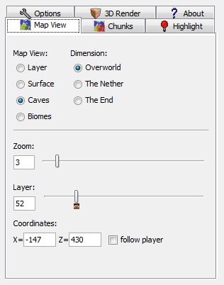

Search Documentation
Search Documentation
- About
 Gallery
Gallery- Getting Started
- User Interface
- Documentation
- Community
- Resources
2D Map — Map View Tab
Overview | Map View Tab | Chunks Tab | Highlight Tab | Options Tab | 3D Render Tab

- Map View
- Toggles different view modes to aid in picking a certain area.
- Layer - This defaults to the players y position. Use the layer slider toward the bottom to change the layer.
- Surface - Default view mode of Chunky. Shows a 2d overviewer of the world.
- Caves - Displays all caves.
- Biomes - Similar to the Surface view mode. Displays map in biome colors.
- Dimension
- Displays the different dimensions of Minecraft if available.
- Zoom
- Adjusts the current area of view of the 2D Map.
- Layer
- Only effects the Layer Map View Mode. Defaults to your players current position on the map.
- Coordinates
- The X and Z position of the camera. These corrdiantes are the same as in Minecraft.
- Follow Player
- If the current world is open in Minecraft, the 2D map viewer will follow your player as you find a perfect place to create a render.